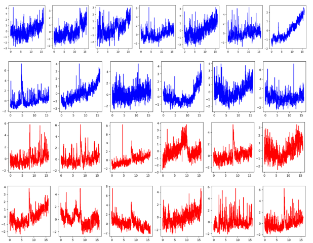

Getting Into Worm's Brains: My Final Year University Project
Reading time: 7 minutes***
What is it?
This is my individual research project on which I worked in my final year at university. In this project, I identified which neurons in brains of worms are responsible for the worms' heat avoidance behaviour.
Every behaviour in worms and other animals has its root in neurons - some neurons detect outside stimulus (e.g. unpleasant heat), then some neurons perform "computations" on the information passed down from detection neurons, and at the end some neurons stimulate the muscles to move away from the stimulus or to perform other actions in response to it.
Why is it interesting?
If we can understand how neurons cause heat avoidance behaviour works in worms, we can apply similar techniques to understand how other neurons cause other behaviours (e.g. exploration behaviours, aggression, feeding, mating, etc.). If we can find a technique of understanding how neurons cause behaviours in worms, we can apply it to more complex animals - flies, mice, monkeys, and eventually humans.
Once we understand how neurons lead to a behaviour, we can modify it - we can remove some of the responsible neurons which will stop the behaviour, or we might be able to add new neurons to create additional behaviours. We might be able to build a digital brain assembled from neural circuits responsible for various behaviours.
Why worms?
A specific type of worm was used for this research: C. elegans. C. elegans are commonly used in neuroscience research, because it's one of the simplest organisms with a neural system that exhibits many behaviours also seen in humans: learning, ageing, avoidance and attraction behaviour, and more. They only have about 300 neurons, which makes studying connections and causation between these neurons relatively simple.

C.elegans worm seen under the microscope. Author: Zeynep F. Altun, www.wormatlas.org
How did I do it?
Most research that aims to identify neurons responsible for certain behaviours takes place in a lab setting and uses live animals. Various neurons might be surgically removed from the animals' brains to see whether the studied behaviour (e.g. aggression) can continue without these neurons, or mutated animals that don't posses these neurons are used.
In my project, instead of using a lab, I used a publicly available dataset which contained recordings of neural signals of approximately 40 worms. Half of those worms were exposed to an unpleasant heat stimulus at a particular time, and the other half was the control group.
My aim was to identify which neurons showed a statistically significant difference between the worms that were exposed to the stimulus and the control group. To do this, I used the KS test, which can essentially calculate whether two sets of samples came from the same underlying distribution.
In my case, for each neuron, the two sets of samples were the recordings of this neuron from the worms exposed to the heat stimulus and the recordings from the worms in the control group. If the KS test calculated them to have likely come from the same distribution, this implied that there was no statistical significance for this neuron, therefore it's unlikely to be involved in the heat avoidance behaviour. However, if the KS test calculated that they were unlikely to have come from the same distribution, this implied that, for this neuron, there was a statistically significant difference between the worms exposed to heat and the control group, and therefore this neuron might be involved in heat avoidance behaviour.
There might be some neurons that always show a lot of variability, not only between the heat and control group, but also for individual worms in the same group. My techniques accounted for that.
All measurements for AVDR neuron (the neuron that drives backwards movement): worms exposed to the noxious heat stimulus (red), control group worms (blue). X-axis represents time, y-axis represents strength of neural signal. The noxious heat heat stimulus was introduced halfway through the measurements (at 8 minutes mark).
What were the results?
17 statistically significant neurons were found. Out of these neurons, only 5 have previously been identified as responsible for heat avoidance. My research introduces 12 more neurons potentially involved in the heat avoidance circuit in C. elegans.
Some of the identified neurons were:
- AVDR: neurons that drive backwards movement
- ASHL: sensory neuron that responds to unpleasant stimuli
- FLPR: sensory neuron that senses noxious temperatures
- IL2R: neuron that regulates survival strategy under harsh conditions

Visual example of how the response of AVDR (the neuron that drives backwards movement) differs between the heat and baseline worms. For the full list of identified neurons and all graphs of averages, see the report.
Next steps?
My research identified 17 neurons that are likely involved in the heat avoidance behaviour, however it has not identified the causal links between them. Furthermore, my method doesn't distinguish whether the identified neurons are directly involved in this behaviour, or whether they are simply downstream neurons affected by the signals sent from other neurons upstream. As a noxious heat stimulus leads to a wide response in the worms' nervous system, many neurons will be inadvertently affected through other neurons that are more directly involved in the behaviour.
Future work could attempt to distinguish between direct versus downstream neurons, for example by investigating the delay between the stimulus and the change in neural activity. This might also help determine the causal links between the neurons.